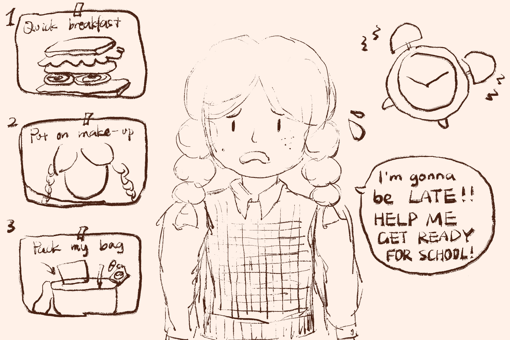
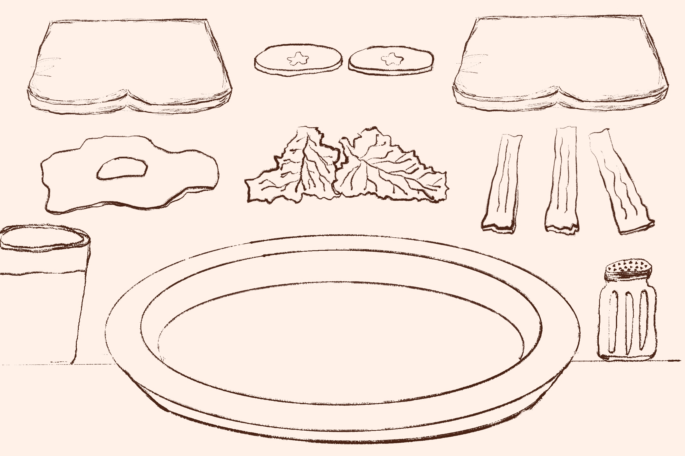
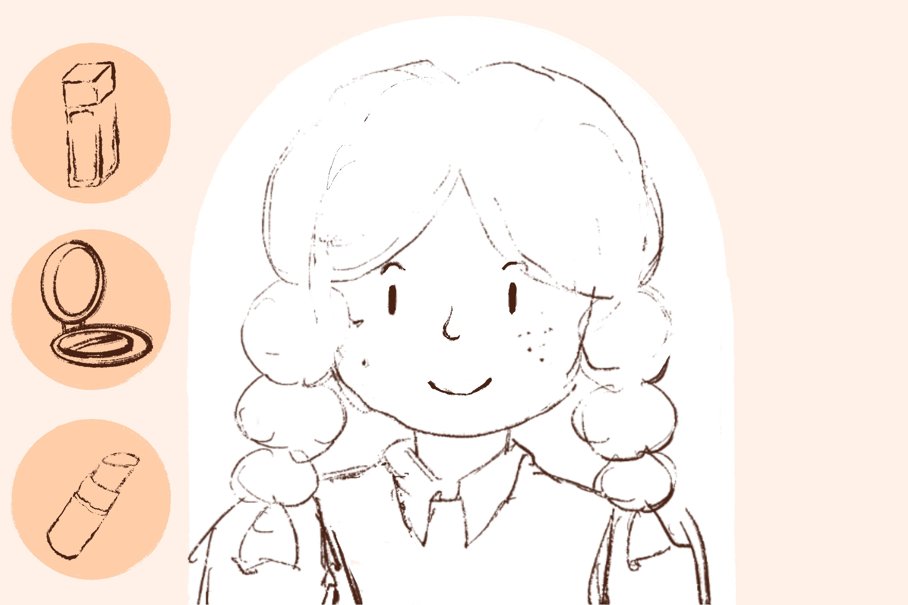
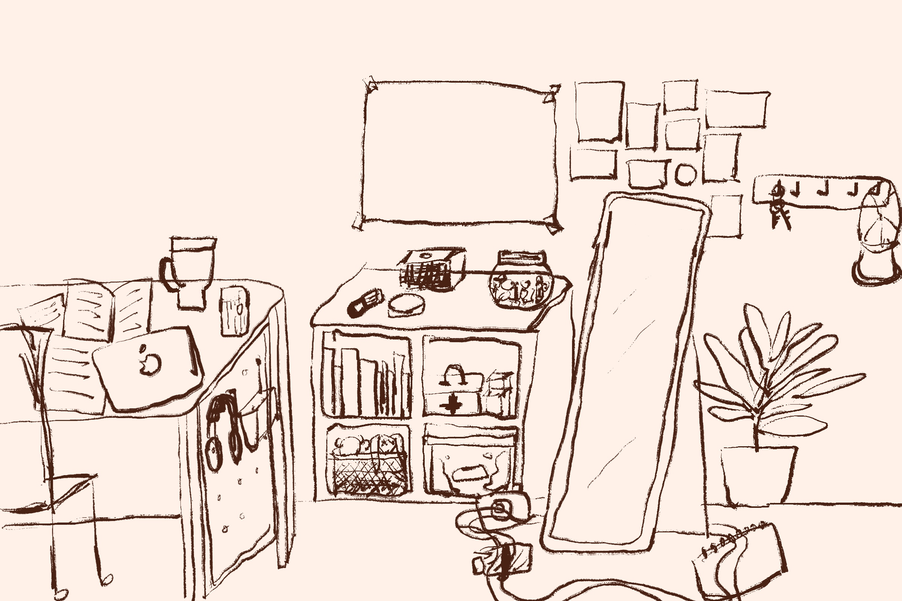
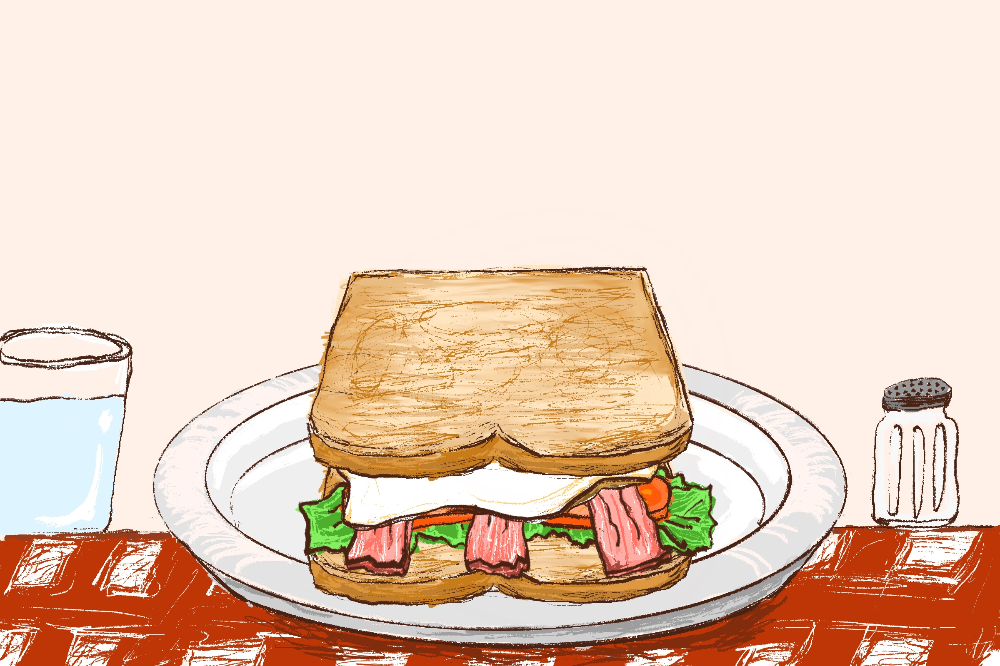
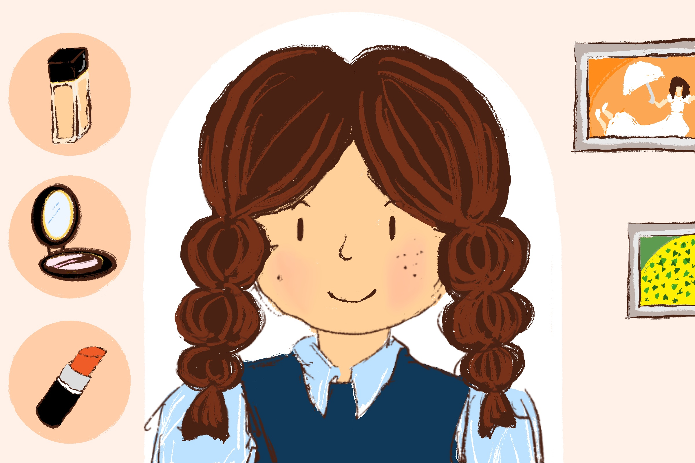

Project Type
Browser Game
Tools
p5.js, Procreate
Game Description
I was inspired by the "Get ready with me" vlogs on social medias. In those vlogs, vloggers record the whole preparation process before they go out. So, I want to make my preparation process before I go to school in the morning in the form of a game. Basically, the process includes two steps: Making breakfast and putting on make up. I was planning to make a third scene of helping the main character pack her bag, but time is limited to me, and by the submission time I can't be able to make it.
In the first step, I want players to make a sandwich by stacking one element on top of another. When it is done, the NEXT button appears and players can move on to the next step. In the second step, players need to click on the cosmetics in order and drag it to the character's face perspectively to help her put the make up on. When it is done, the game ends.
Play the Game
Design Sketches




Scene Screenshots


Reflection
Making this game kind of push me to learn to make my coding more organized. Because this game includes more scenes, so the entire code is long, I need to really make it concise and structured to help me better check how each part works and easy for me to debug. For the game mechanism, actually there are a few effects that I tried to make but failed. For example, in the first step of the preparation process, I want the code to check if players have stacked the ingredients all together, if not, players may not pass the game, and the ingredient that is not on top of the previous one will appear on the top of the screen again and make players to play again until they are stacked. But my coding ability doesn't allow me to write such a complex mechanism, so at the end I just made players to click their mouse and let the ingredients fall down. Besides, for the second steps, originally I want to make players to draw and color the face after choosing a cosmetics. But during the coding process, I found it is hard for me to make players color in specific area of the screen but not outside of it. So I compromise again to make a simpler mechanism that players just press their mouse and drag the cosmetics in the right place, and I just simply replace the images of the main character to tell players that they are doing the right thing and can move to the next step.